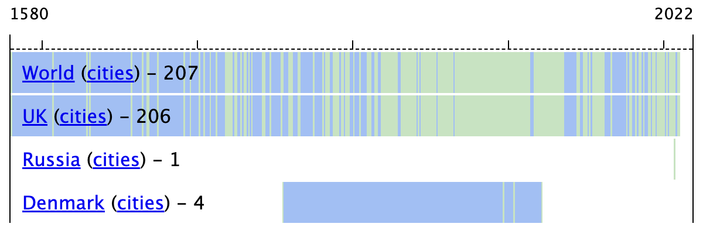

Well, it's a collection of buildings with the year of (re-)construction on their facade. Or, more precisely, it's a collection of years on the dated buildings.
The main page is the timeline from the first year in the collection until the current year. Green - found. Blue and White - not found. The main purpose of the Blue is to quickly grasp/compare the range of years for a single country/city.
Click on any of the "cities" links, and you will see a similar view for cities.
Statistics will be available when you click on any of the country/city links:
On the last point. Even though, according to the rules every item should be verifiable with Google Street View, I do use this collection as one of the main drivers for cycling/traveling.
This is why if you click on any of the green squares, you will see a couple of photos, map, and Google Street View links, as well as (if available) a link to a heritage registry entry (e.g. Historic England)
That's it! Will it ever be complete? No idea. I feel that there are not so many items left in London, but I'm sure the UK should get me to 300+.
Want to help or start your collection? Check out code on the GitHub.
Otherwise, just enjoy browsing the collection!